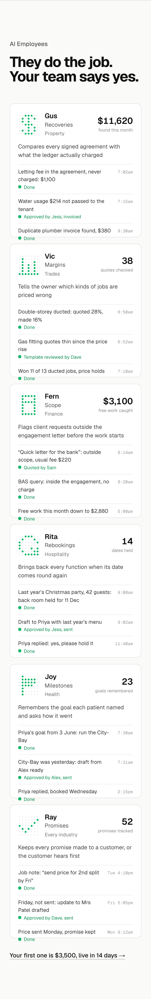
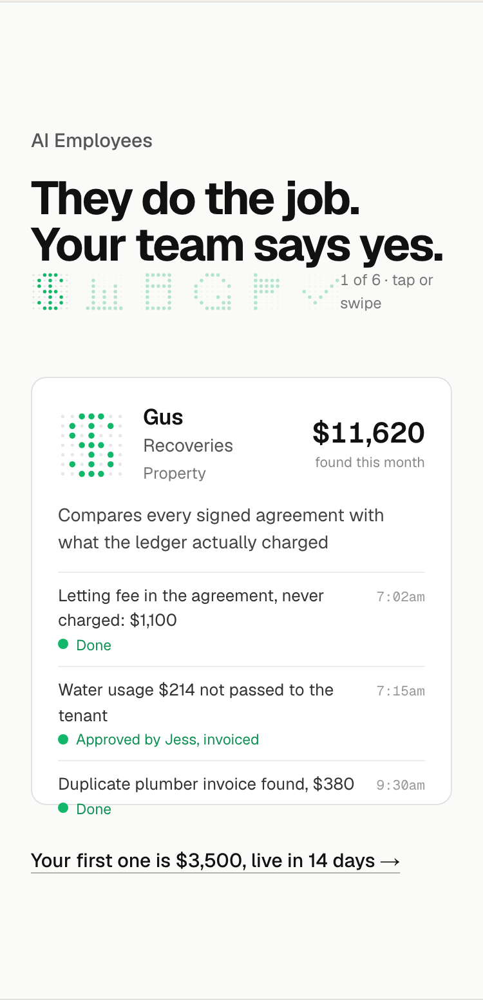
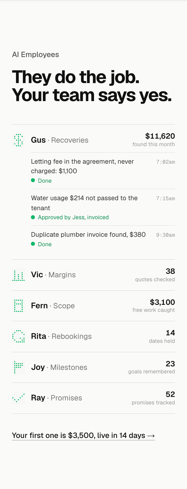
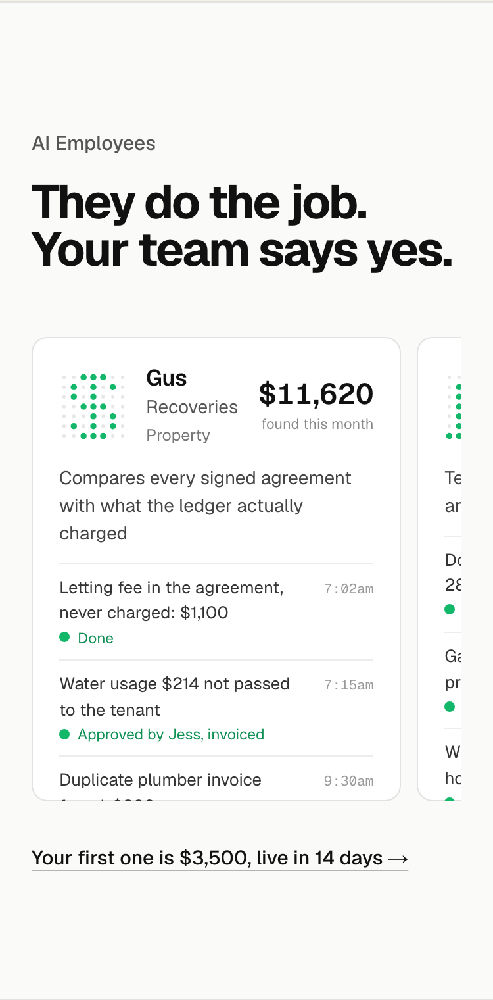

Detail 5 of 5. The phone layout at 375 with every card showing its finished day, the heading, the timestamps and the close in place. Today is the full six-card column; the other three change how six employees fit a phone.
TodaySix cards, one columnEach card: the avatar, name, job and industry, the month’s figure, the one-line job, the three lines with their times; each plays once as it scrolls into view. Long: six cards is most of a screen each.

1. One at a timeAn avatar strip, one cardThe six avatars in a row, the active one lit; one card under them plays, and a tap on an avatar (or a swipe) brings the next. The phone version of the scene: a sixth of the height. Recommended.

2. The scoreboard, openedSix rows, the first openedThe list from the laptop layout, each row name, job and the month’s figure; a tap opens a row into its three lines. Reads as the roster first, the days second.

3. A row of cardsCards side by side, the next one peekingThe cards in a horizontal row at most of the width, so the next card’s edge shows and invites a swipe; each plays as it arrives.
